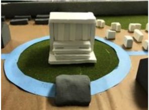
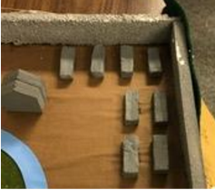
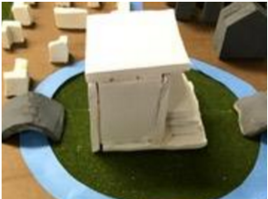
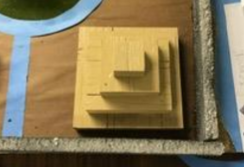
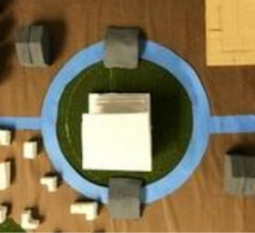
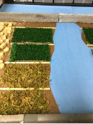
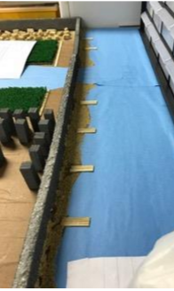
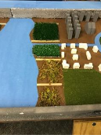

(SPIE stands for Social, Political, Intellectual, and Economic.)
Social:
There were four major topics that we thought about while we put together our civilization. The first of which is the social aspect of our civilization, this includes laws, punishments and justice. Our civilization is comprised of basic laws such as no stealing or murder which are then accompanied by their punishments such as fines, work or death. The people are ranked from top to bottom as follows, Senate members, Government workers, Soldiers, Farmers glassworkers and all citizens are even below solders and lastly comes slaves.
Political:
The political situation is a representative republic. Every votes on senate members and those members can then vote on important decisions such as new laws. Everyone can vote in senators except slaves.
Intellectual:
For intellectual, our people believe in three Gods, land, wind and sky and worship all three in our temple that is built next to the the sea and built up high so it can be close to all three elements.
Economic:
Lastly for economics, we are the trade capital of the south. All trade that is conducted runs through us first. We control the south because of our trade if cities disobey us we cut off all trade effectively starting all allied city states of resources they have built their cities around. As for us our people trade as well as fish, glasswork and farm. Our people pay a 20% tax to our government to pay for our military and all other allied cities pay 20% tax to us as well.
  